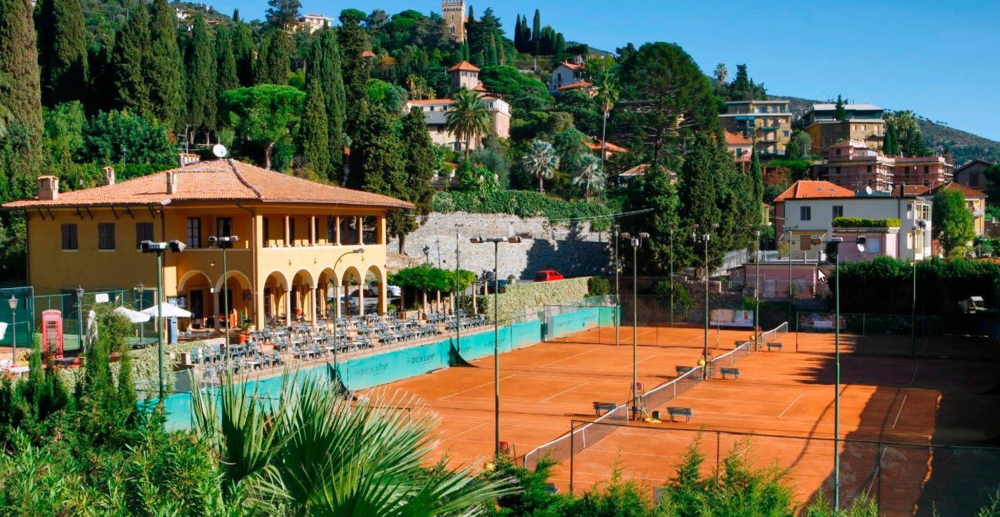

Falls das Wetter wirklich unverhofft über mehrere Tage schlecht sein sollte und langsam die Ideen ausgehen, gäbe es noch den Tennis-Club, oder - falls gerade Samstag ist - den "Märt". Der ungefäre Ort des Marktes ist auf der Übersicht eingezeichnet, ihr müsstet im Hotel nach dem genauen Weg fragen. Der Tennis mit charmantem Clubhaus wo man auch einfach nur etwas trinken kann ist hier zu finden:
